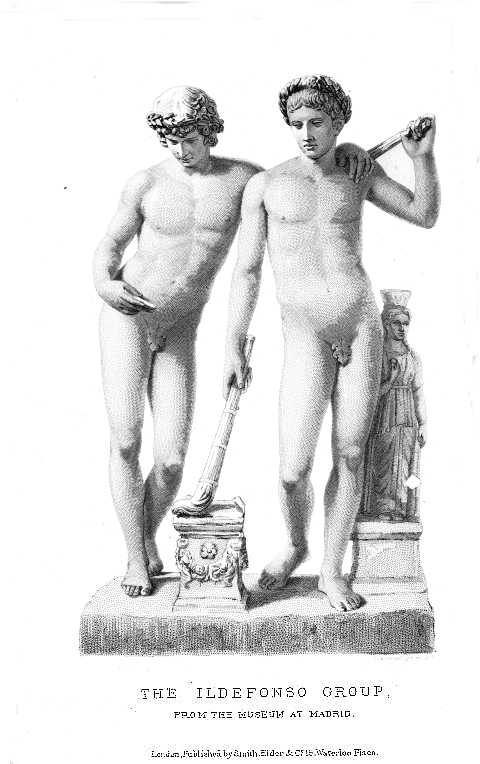

SKETCHES AND STUDIES
IN
ITALY AND GREECE
BY
JOHN ADDINGTON SYMONDS
AUTHOR OF "RENAISSANCE IN ITALY", "STUDIES OF THE GREEK POETS," ETC.
IN THREE VOLUMES
LONDON
JOHN MURRAY,
ALBEMARLE STREET, W.
CONTENTS
- COMO AND IL MEDEGHINO
173
- BERGAMO AND BARTOLOMMEO COLLEONI
190
- CREMA AND THE CRUCIFIX
209
- CHERUBINO AT THE SCALA THEATRE
223
- THE GONDOLIER'S WEDDING
292
- A CINQUE CENTO BRUTUS
315
- TWO DRAMATISTS OF THE LAST CENTURY
345
- FLORENCE AND THE MEDICI201
- THE DEBT OF ENGLISH TO ITALIAN LITERATURE258
- POPULAR SONGS OF TUSCANY276
- POPULAR ITALIAN POETRY OF THE RENAISSANCE305
- THE 'ORFEO' OF POLIZIANO345
- EIGHT SONNETS OF PETRARCH365
-
FOLGORE DA SAN GEMIGNANO1
-
THOUGHTS IN ITALY ABOUT CHRISTMAS21
- INDEX FOR ALL THREE VOLUMES365